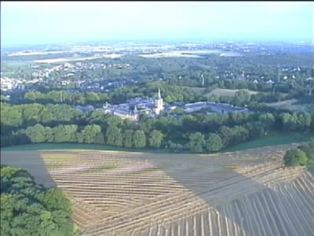
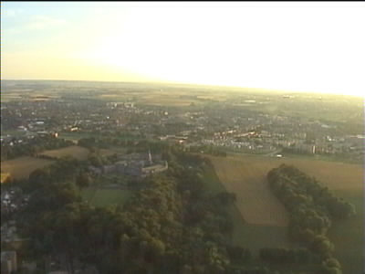
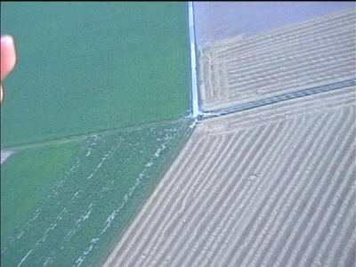
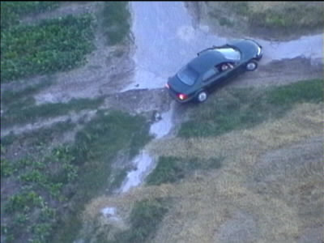
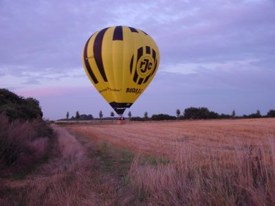
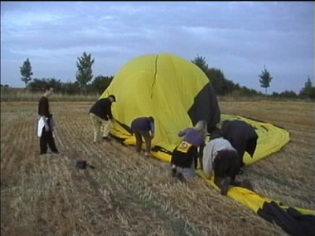

|
Roda-ballon (2) 16 augustus 2001 |

Bij Rolduc wordt de grens overgestoken.

De tocht gaat verder over Herzogenrath naar Alsdorf. De
vluchthoogte is 1500 voet (ca. 500 meter).

Hier rijdt de "koempelcab" zich vast in het vrije veld.

Even inzoomen :-)

Na een beetje heen en weer gestuiterd te hebben landen de
ballonvaarders in een stroveld te Dürboslar.

Iedereen moet helpen inpakken. Dan is er champagne en
wordt er teruggereden naar het PLS alwaar de ballonvaarders
hun luchtdoopcertificaat ontvangen.